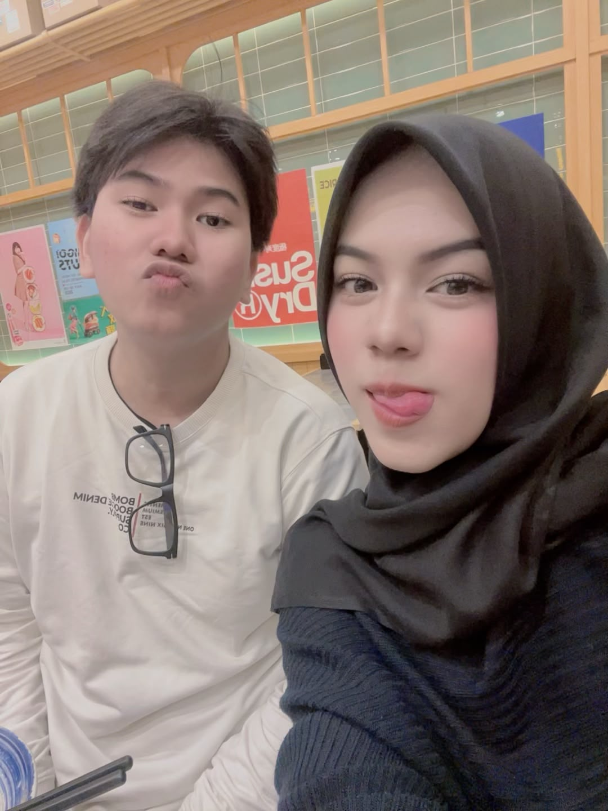
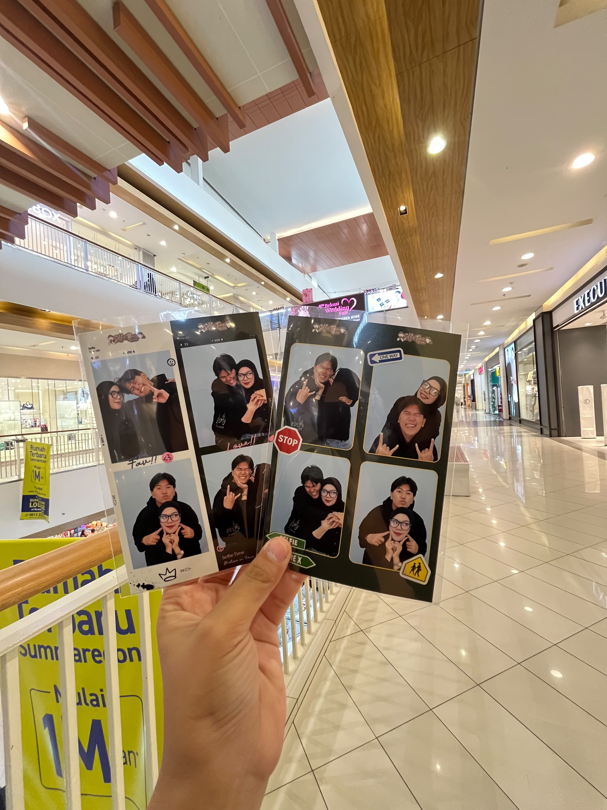
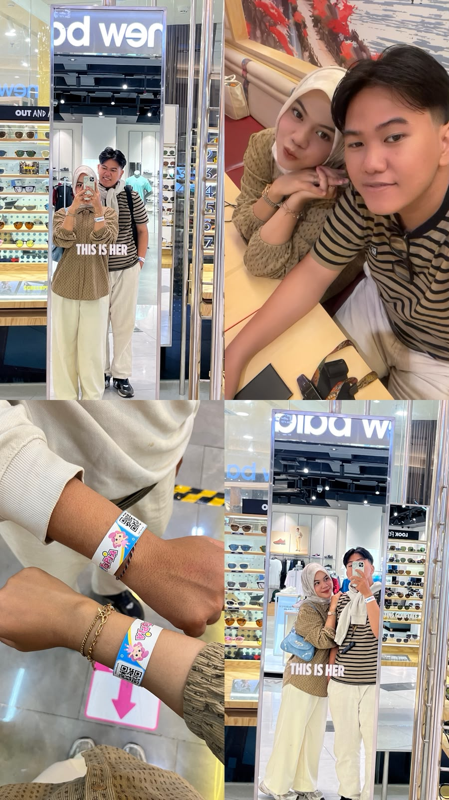

Hai, Cantik...
Aku bikin halaman kecil ini khusus buat kamu. Coba nyalain musik di atas dulu ya biar suasananya makin pas, terus scroll pelan-pelan ke bawah ✨
Ini Potongan Cerita Kita
Tap / ketuk tiap kartu foto untuk baca pesan di baliknya 👆

Tap untuk balik ↻FIRST DATE KITA
#01Kamu Inget Ga Momen Ini?
" Aku masih inget banget waktu kita mutusin untuk jalan pertama kali nya setelah beberapa komitmen yang kita bilang dan banyak hal yang kita lakuin bahkan aku sedih kamu sempet nolak aku takut aku nya sakit hati tapi waktu itu gimana cara nya aku tetep mau sama kamu, lalu kita mutusin untuk jalan ke SMB tanpa ada orang yang tau bahkan temen deket kamu pun gatau kalo kita jalan, setelah ituu aku anterin kamu kerumah rara dan kamu di sidak juga ketika pas pulang nyaa kita bahas lagii , banyak lika liku juga ya kitaa dipikir pikir tapii mau bagaimana pun lika liku nya aku bakal tetep perjuangin kamu"
Tap lagi untuk kembali
Tap untuk balik ↻Ini Photobooth Pertama Kita
#02Ini adalah moment photobooth yang gabisa aku lupain
" Photobooth ini moment yang gabisa aku lupain sampe kapan pun, karena di momen ini kita pertama kali couple dan aku sampe bingung untuk pose nya gimana😭 kitaa juga pake aksesoris lucu walaupun pas photobooth ga di pake sihh yaaa wkwkwk tapii aku senengg banget , ohh iyaa disitu kamuu mirip davina karamoy tauu sumpahh aku sampe pangling liat nya"
Tap lagi untuk kembali
Tap untuk balik ↻Ini Momen Playgorund Kita
#03Kamu Inget ini Ga Be? hahahaa
"Ini juga salah satu momen yang gapernah aku lupain, karena ini kali pertama aku ngerasain main ke playtopia/playground sama orang yang aku suka dan aku sayang , momen yang kamu main sama anak kecil ituu sumpah lucu bangett , kita outfit check couple an lagii , semogaa aku selalu bisa menuhin wishlist kamu yaa!!! Lovee u sayanggg!!"
Tap lagi untuk kembaliVideo Kecil Buat Kamu
Tonton sebentar sampai habis ya 🎬
"aku kasih video ini aja lah yaa hahahah tapii video ini tetep paling lucuu menurut akuu sih kita sok2an ngevlog 😭"
Untuk kamu, aku pengen bilang sesuatu ke kamu tapii aku pengen secara lansung aja, ini jadi hadiah pertama buat kamu yaa , Tunggu Minggu Besok Ya be kalo barang nya sudah sampai!!
Masih banyak momen momen kitaa sebenernyaa tapii aku masukin yang menurut aku palingg berharga walaupun setiap hari setiap momen kita aku selalu anggap berharga semua dan
Aku nggak janji bakal selalu sempurna, tapi aku janji bakal selalu berusaha bikin kamu bahagia dan jadi orang yang paling peduli sama kamu, dan mungkin kita ga selalu happy akan selalu ada banya rintangan atau lika liku semoga kitaa bisa hadapin bareng bareng yaa!!
Yeay! Makasih Ya Sayang!
Mulai hari ini, kamu resmi jadi milikku dan aku resmi jadi milikmu. Makasih udah nerima aku, aku sayang banget sama kamu! ❤️
Hari Spesial Kita